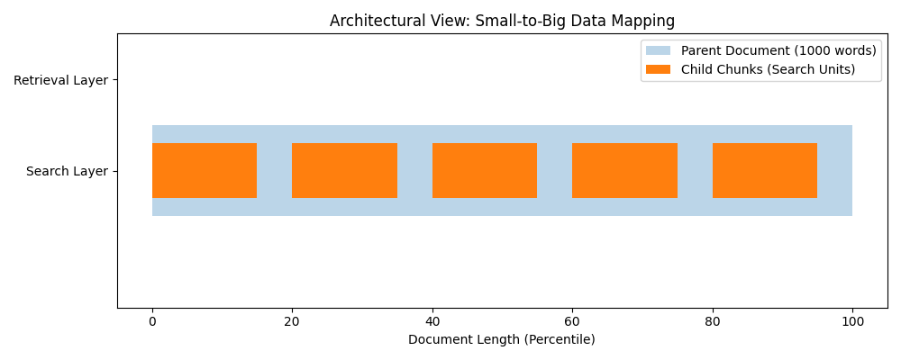

graph TD
subgraph Standard [Standard RAG 1:1]
Q1[Query] --> VS1{Vector Search}
VS1 --> C1[Chunk A]
C1 --> LLM1[LLM Prompt]
end
subgraph Decoupled [Small-to-Big]
Q2[Query] --> VS2{Vector Search}
VS2 --> SC[Small Child Chunk]
SC -.->|Linked Reference| LP[Large Parent Context]
LP --> LLM2[LLM Prompt]
end
style SC fill:#f9f,stroke:#333,stroke-width:2px
style LP fill:#bbf,stroke:#333,stroke-width:4px
Hierarchical Indexing: Small-to-Big Retrieval
The Core Pattern: Decoupling Search from Retrieval
- The Status Quo: 1:1 Ratio (Search Unit = Synthesis Unit)
- The Process: Chunk \(\rightarrow\) Embed \(\rightarrow\) Store \(\rightarrow\) Retrieve \(\rightarrow\) Prompt
- The Architect’s Insight: This linear approach is a production bottleneck.
- The Goal: Separate how we find data from what we show the LLM.
The Context Paradox
1. The Search Need (Precision)
- Requires Granular text.
- Large chunks create “blurry” embeddings.
- Goal: High signal-to-noise ratio.
2. The LLM Need (Context)
- Requires Broad text.
- Small snippets lack definitions/nuance.
- Goal: Full narrative flow.
The Paradox: Small chunks are better for retrieval; large chunks are better for generation.
The Architectural Shift: Small-to-Big
- The Search Unit (The “Bait”): Small, specific segments (Child Chunks) optimized for vector math.
- The Retrieval Unit (The “Payload”): The original, larger context (Parent Document) optimized for LLM reasoning.
Optimizing the “Bait” (Search Unit)
- Problem: Diluted embeddings.
- Concept: A 1,000-word page vector is an average of every topic on that page.
- Solution: Index 100-token “Child Chunks.”
- Result: High cosine similarity for specific technical queries.
Example: “What is the cooling capacity?” matches a child chunk about radiators better than a whole car manual.
Optimizing the “Payload” (Retrieval Unit)
- Problem: LLMs are “Context Engines.”
- The “As Mentioned Above” Trap: Small chunks often contain pronouns or references to missing text.
- Solution: When a child is “hit,” fetch the 1,500-token Parent.
- Result: The LLM sees headers, definitions, and the full scope of logic.
Comparison: Why Decouple?
| Feature | Standard (1:1) | Small-to-Big |
|---|---|---|
| Search Precision | Moderate (Noise) | High (Focused) |
| LLM Context | Low (Limited) | High (Full) |
| Storage Cost | Lower | Higher (More Vectors) |
| Complexity | Simple | Moderate |
| Reliability | Prone to “Out of Context” | Production Grade |
Summary: Retrieval vs. Synthesis
- Retrieval and Synthesis are two different cognitive tasks.
- They require different data granularities.
- The Architect’s Rule: Find with a needle, feed with a shovel.
Next up: The Library Card Catalog Mental Model
The Conflict of Interest
Search-Optimized
- Small, punchy text.
- High “signal” for math.
- Goal: Be easy to find.
Context-Optimized
- Large, nuanced blocks.
- Rich “Chain of Thought.”
- Goal: Be easy to understand.
The Architect’s Dilemma: The text easiest for a computer to find is rarely the text best for an LLM to reason with.
Mental Model: The Library Card Catalog
graph LR
A[User Question] --> B(Card Catalog)
B -->|Small Index Card| C{Call Number}
C -->|Reference| D[The Heavy Book]
D --> E[Knowledge Acquired]
- The Card: Searchable, compact, metadata-rich.
- The Book: Deep context, diagrams, full narrative.
- The Link: The “Call Number” connects the two.
Mapping the Analogy to RAG
| Library Component | RAG Component | Technical Role |
|---|---|---|
| Index Card | Child Chunk | 100-200 tokens. Optimized for Cosine Similarity. |
| Call Number | Metadata Link | A UUID mapping the Child to the Parent. |
| The Book | Parent Document | 1000+ tokens. Optimized for LLM Comprehension. |
The “Bait and Switch” Workflow
graph LR
Q((Query)) -- Semantic Search --> CC[Child Chunks]
CC -- Matches --> ID[Parent_ID]
ID -- Fetch --> P[Parent Document]
P -- Context --> LLM[LLM Generation]
subgraph Vector_Store [Vector Store]
CC
ID
end
subgraph Doc_Store [Document Store]
P
end
Why Hierarchical Indexing Wins
- Small Chunks: Prevent “Vector Dilution.” A 2,000-word doc has a “blurry” vector; a 50-word sentence has a “sharp” vector.
- Large Chunks: Prevent Hallucinations. LLMs need surrounding sentences to understand intent and nuance.
- The Result: High Retrieval Precision + High Generation Faithfulness.
The Architect’s Data Schema
- Searchable:
text+vector - Retrievable:
full_contextviaparent_id
The Architect’s Blueprint: Components & Data Structures
- The Problem: Standard RAG uses the same unit for searching and reading.
- The Solution: Decouple the Unit of Search from the Unit of Retrieval.
- The Strategy: Small-to-Big (Parent Document Retrieval).
- The Goal: High-speed filing with “Sticky Note” searches and “Folder” contexts.
The Dual-Layered Approach
Search Index
- Child Chunks
- Small, dense snippets.
- Optimized for mathematical similarity.
- “The Sticky Note.”
The Archive
- Parent Documents
- Large, contextual blocks.
- Optimized for LLM comprehension.
- “The Filing Folder.”
graph LR
A[Raw Document] --> B[Parent Splitter]
B --> C[Child Splitter]
C --> D[(Vector DB)]
B --> E[(Doc Store)]
D -.->|parent_id| E
Component 1: The Parent Splitter
- Role: Defines the “Retrieval Unit” (The Context).
- Logic: Preserves the “Why” and “How” surrounding a fact.
- Granularity: 1,000–2,000 tokens or logical sections.
- Storage: Key-Value Store (Redis, MongoDB, S3).
“If a user asks about revenue growth, the child finds the number; the parent provides the explanation.”
Component 2: The Child Splitter
- Role: Defines the “Search Unit” (The Precision).
- Logic: High-dimensional vectors lose “resolution” in long text.
- Granularity: 50–150 tokens (Sentences/Small Paragraphs).
- Storage: Vector Database (Pinecone, Chroma, Milvus).
Why go small? - A 1,000-word embedding is blurry. - A 50-word embedding is sharp.
The “Glue”: parent_id Metadata
The system relies on a Foreign Key relationship to function.
| Field | Purpose |
|---|---|
| Vector | Mathematical “address” of the child text. |
| Text | (Optional) Small snippet for debugging. |
| parent_id | Critical Link to the full-context Parent Document. |
Mapping the Relationship
graph LR
subgraph DocStore [Document Store: The Archive]
P1[Parent A: Q3 Financials]
P2[Parent B: Roadmap]
end
subgraph VecDB [Vector Store: The Search Index]
C1[Child 1: Revenue +5%] -- id:A --> P1
C2[Child 2: Costs up] -- id:A --> P1
C3[Child 3: Feature X] -- id:B --> P2
end
Query((User Query)) -->|Search| C1
C1 -->|Lookup| P1
P1 -->|Full Context| LLM[LLM Response]
Dual-Store Architecture: Speed & Cost
| Component | Technology | Purpose | Content |
|---|---|---|---|
| Vector Store | Pinecone, Chroma | Fast Similarity Search | Child Embeddings + ID |
| Doc Store | Redis, S3, Mongo | Reliable Retrieval | Full Parent Text |
- Efficiency: Vector DBs are expensive for large text storage.
- Speed: “Fetch-by-ID” in Redis is faster than metadata-heavy vector lookups.
Visualizing the Transformation
Image: A visualization showing a single document color-coded into large parent blocks, with each block further subdivided into multiple small child points.
Architect’s Summary
- Decoupling is Power: Search for precision, read for context.
- Metadata is the Backbone: If you lose the
parent_id, the system is broken. - Optimize for Scale: Use the right tool for the right job (Vector vs. KV Store).
Execution Flow: The ‘Bait and Switch’
The Core Philosophy
- Search \(\neq\) Generation.
- In standard RAG, what you find is what you feed the LLM.
- In Hierarchical Indexing, we break this 1:1 relationship to optimize for both precision and context.
The “Bait and Switch”
- Bait: Use a granular “Child” chunk for high-precision vector search.
- Switch: Swap the child for a broad “Parent” chunk for the LLM prompt.
The Architect’s Switchboard
graph LR
User((User)) --> Q_Emb[Query Embedding]
Q_Emb --> VectorSearch{Vector Search}
subgraph "The Child Index"
VectorSearch -->|k-NN| ChildNode[Child Chunk ID]
end
subgraph "The Bait and Switch"
ChildNode -->|Lookup| ParentID[Parent ID]
ParentID -->|Fetch| DocStore[(Document Store)]
end
DocStore -->|Full Context| Prompt[Prompt Template]
Prompt --> LLM[LLM]
LLM --> Response((Final Answer))
style ChildNode fill:#f96,stroke:#333
style DocStore fill:#69f,stroke:#333
Step 1 & 2: Precision Retrieval
- The Query: “What are the specific safety protocols for high-pressure valve maintenance?”
- The Embedding: Query is converted to a vector (e.g.,
text-embedding-3-small). - The Search: We query the Child Index (128-token chunks).
Why Small Chunks?
- Signal-to-Noise Ratio: Large chunks (1000+ words) are “blurry” vectors.
- Precision: Small chunks represent specific concepts or sentences.
- The Result: We find the exact needle in the haystack.
Step 3: The ‘Switch’ (Metadata Pivot)
The system ignores the Child text and extracts the Parent ID from the metadata.
- The Pivot: We use the “Bait” (the glove sentence) to find the “Location” (Page 12).
Step 4 & 5: Contextual Generation
Standard RAG
- Prompt:
Context: [Child Chunk] + Question - Result: “Wear gloves.”
- Verdict: Too brief. Lacks “Why” and “How.”
Hierarchical RAG
- Prompt:
Context: [Full Parent Chunk] + Question - Result: Full safety procedure, warnings, and follow-up steps.
- Verdict: Professional and comprehensive.
The Parent Chunk provides the “narrative flow” that the LLM needs to reason effectively.
Balancing Precision vs. Recall
| Feature | Child Search (The Bait) | Parent Retrieval (The Switch) |
|---|---|---|
| Goal | High Precision | High Recall |
| Action | Find the needle | Get the whole haystack |
| Benefit | Avoids “Vector Blurring” | Provides “Narrative Flow” |
| LLM Impact | Minimizes irrelevant data | Maximizes reasoning capability |
Visualizing Information Density

Image: A line chart showing ‘Search Accuracy’ peaking at small chunk sizes and ‘Context Quality’ peaking at large chunk sizes, with the ‘Bait and Switch’ sitting at the intersection.
The Architect’s Verdict: The “Bait and Switch” decouples retrieval logic from generation logic, allowing both to be optimized independently.
Production Considerations: Storage vs. Context
- Sustainable Design: Moving beyond “it works” to “it scales.”
- The Trade-off: Balancing performance gains against physical and economic constraints.
- The Architect’s Dilemma:
- Storage Overhead (Infrastructure)
- Inference Economics (Operational Cost)
The Storage Multiplier: Architecture
1. Vector Database
- The Search Index
- Stores thousands of Child Chunks.
- Higher RAM usage (Pinecone/Milvus).
- High-frequency, low-latency lookups.
2. Document Store
- The Content Warehouse
- Stores high-res Parent Documents.
- Disk-based storage (S3/MongoDB).
- Lower cost, higher capacity.
graph LR
subgraph VectorDB [Search Index - RAM]
C1[Child 1]
C2[Child 2]
C3[Child 3]
end
subgraph DocStore [Warehouse - Disk]
P1[Parent Document]
end
C1 -.->|parent_id| P1
C2 -.->|parent_id| P1
C3 -.->|parent_id| P1
Context Window Economics
- Token Throughput: Larger payloads = Higher “Time to First Token” (TTFT).
- Input Costs: 5 parents @ 2k tokens = 10k tokens/query.
- “Lost in the Middle”:
- Models struggle with extremely long contexts.
- Information density decreases as volume increases.
Image: A line chart showing ‘Accuracy vs. Context Length’ with a U-shaped dip in the center.
Ideal Use Cases: When to Go “Big”
- Legal & Compliance
- Clauses require definitions found elsewhere in the document.
- Technical Manuals
- Steps require safety warnings and tool prerequisites.
- Academic Research
- Results mean nothing without the methodology context.
The Rule of Thumb: Use when “Small” chunks find the Location, but “Big” documents provide the Meaning.
Contra-indications: When to Stay “Small”
- Atomized Information
- FAQs or standalone snippets with no broader context.
- Latency-Critical Apps
- Voice assistants or real-time chat where every millisecond counts.
- Low-Budget Projects
- When token bloat will drain API credits 5x faster.
The Architect’s Decision Matrix
| Criteria | Standard RAG | Small-to-Big RAG |
|---|---|---|
| Data Structure | Independent snippets | Interconnected sections |
| Primary Goal | Speed & Low Cost | Accuracy & Continuity |
| Storage | Simple (Single Store) | Complex (Dual Store) |
| Context Window | Small (4k - 8k) | Large (32k - 128k) |
| Payload | ~500 tokens | ~2,000+ tokens |